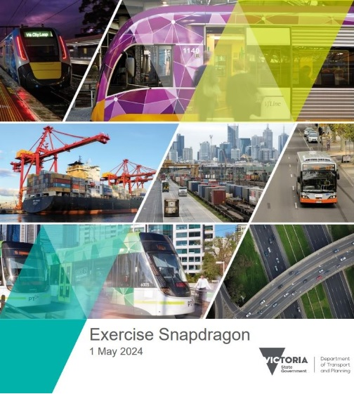

Mathematician | Machine Learning Engineer | Creative Innovator
Hi ! I'm Madiha Ansari, a Data Scientist and Machine Learning Engineer passionate about transforming ideas into data-driven solutions. I love creativity in technology to solve complex problems. I am an innovation seeker, thus challenging myself all the time. My decade-long career has enabled me to help organizations create strategic solutions. My deep-rooted expertise in engineering and mathematics has empowered me to craft industry-specific data architectures and develop high-impact machine-learning models.
Programing: Python, SQL, C, Java
Industry Experience:
Passion Projects:
Participated in Exercise Snapdragon by Department of Transportation Victoria. The workshop focused on cybersecurity, highlighting the strategic risks and consequences, and their impact on the transportation industry, which is an integral part of Victoria's critical infrastructure and economy.
Check out the Predictive Model and Data Architecture
Project SummaryWant to learn more about my professional background?
View ResumeFeel free to reach out to me through my social media channels: